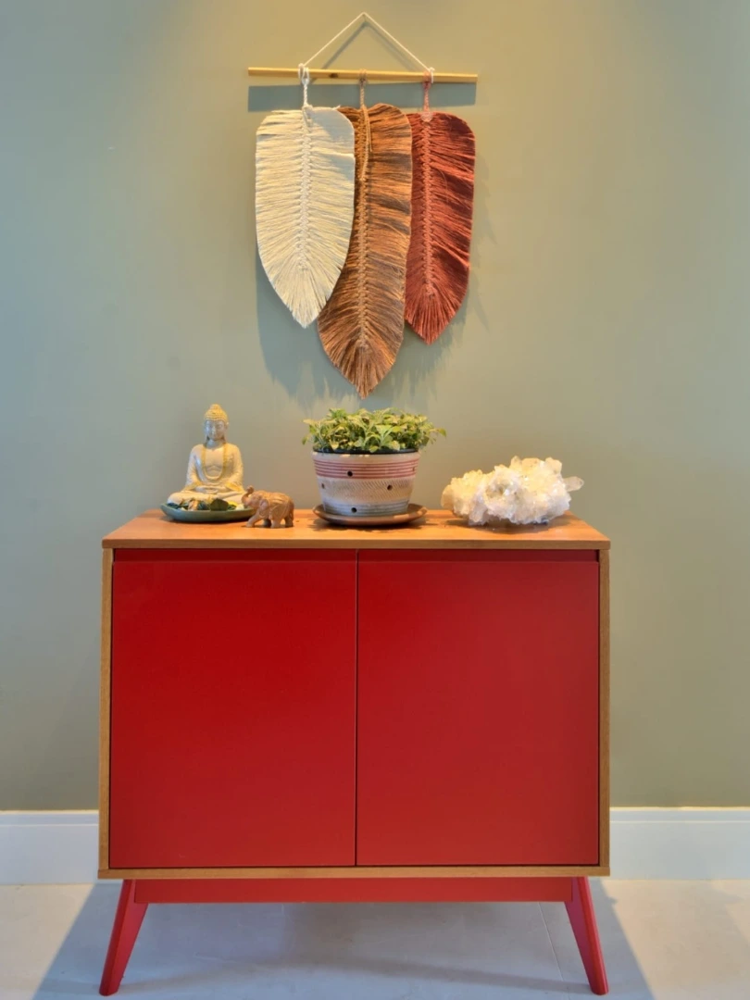
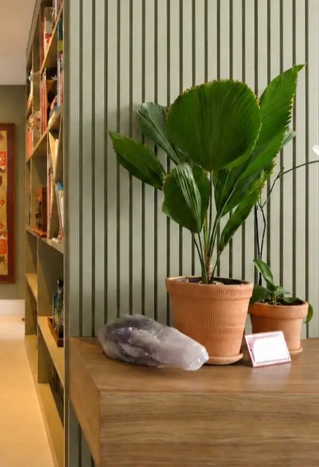
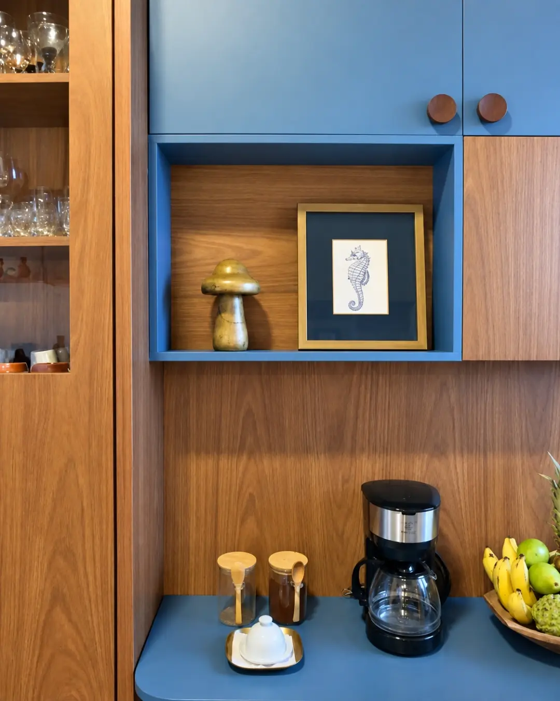
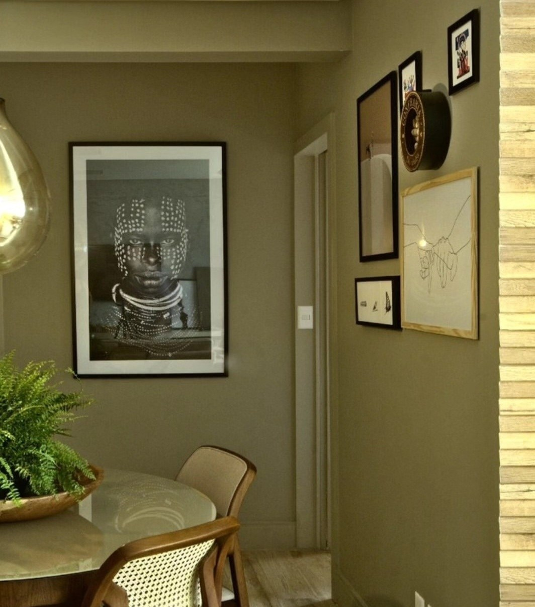

Pular para o conteúdo
Projetos
Como trabalho
A arquiteta
Contato
Débora Reis
Arquitetura
Conversar
Início
Projetos
Apartamento Rio Vermelho
Ver o projeto
Ver em tela cheia


Apartamento Paralela
Ver o projeto
Ver em tela cheia
Apartamento Graça
Ver o projeto
Ver em tela cheia

Apartamento Alto do Parque
Ver o projeto
Ver em tela cheia

Quarto infantil no Itaigara
Ver o projeto
Ver em tela cheia
Chamar no WhatsApp
Mais no Instagram
Fechar
×
O projeto
Quero um projeto assim
Conversar
Prévia
feita para a Débora